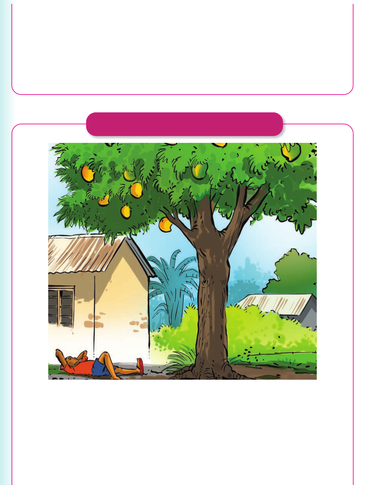

Telling or signing stories - continued
in its mouth. He wanted that bone too. He opened his mouth to grab it. The bone he was holding fell into the river. He finally found the truth. The dog in the river was his own shadow. That night, he went home hungry. Source: Adapted from https://ofhsoupkitchen.org/short-stories-with-morals (b) The lazy boy There was a boy called Juma. He was so lazy. He could not even change his clothes. There was a mango tree outside their house. One day, he wanted to eat some of the mangoes. But he did not climb the tree. So, he lay under the tree waiting for mangoes to fall. Juma waited starving, but the mangoes never fell.
in its mouth. He wanted that bone too. He opened his mouth to grab it. The bone he was holding fell into the river. He finally found the truth. The dog in the river was his own shadow. That night, he went home hungry.
Source: Adapted from https://ofhsoupkitchen.org/short-stories-with-morals
(b) The lazy boy

There was a boy called Juma. He was so lazy. He could not even change his clothes. There was a mango tree outside their house.
One day, he wanted to eat some of the mangoes. But he did not climb the tree. So, he lay under the tree waiting for mangoes to fall. Juma waited starving, but the mangoes never fell.
Telling or signing stories - conclusion
2. Choose one of the two stories. Then, retell or sign it to your fellow pupils. 3. Tell or sign any story you know to your fellow pupils.